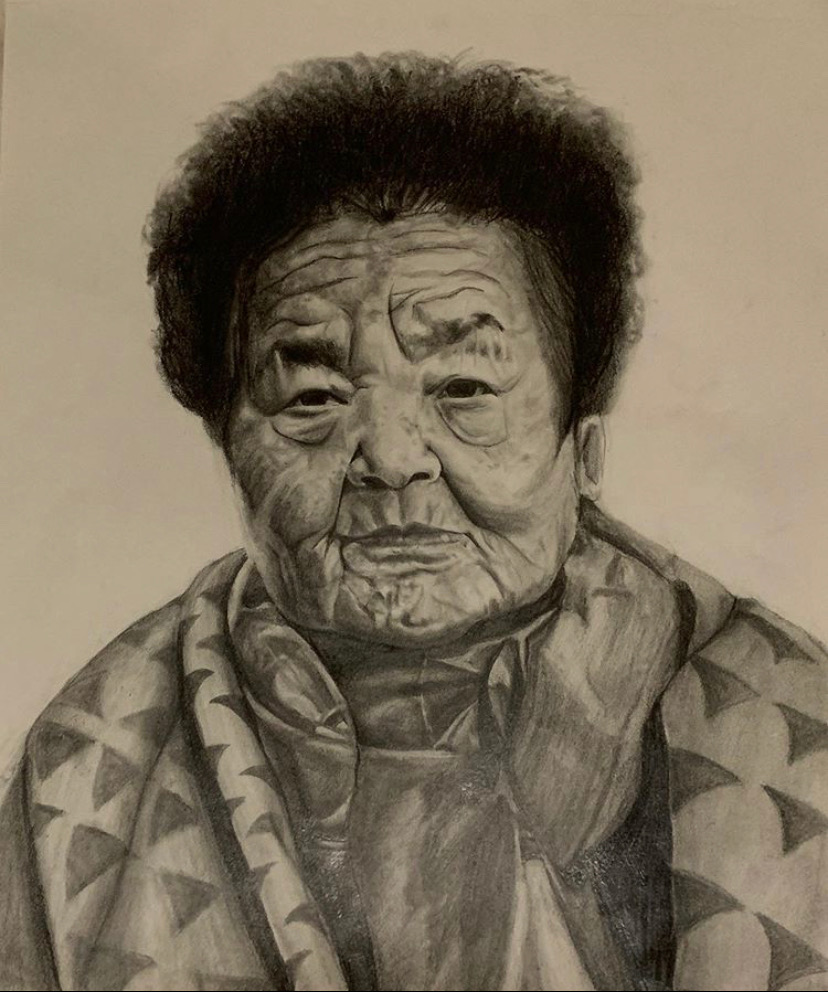

For far too long, the disgraceful history of the Japanese soldiers using Korean women as “comfort women” has gone untold and unrecognized. We haven’t had the closure that is essential for Korean women to work through the trauma inflicted upon their grandmothers and great-grandmothers. The Japanese government actively worked to hide the history, even refusing to issue a formal apology or reparations to this day. This makes me endlessly angry and inspired my drawing titled “Comfort Women”, which depicts the beautiful and pained face of Kim Gun Ja - a former “comfort woman” who died within the last year. I wanted to honor her history and her calls for an apology from the Japanese government. I used pencil so that I could trace her face as much as I wanted to trace the sordid history of “comfort women”. I then exhibited some of my work at a local Los Angeles art show that had a theme to respond to the racial reckoning through which the United States was enduring after the murder of George Floyd and other POCs. Create Change Art Show asked artists to challenge injustice. I once again returned to my cultural history; this time, I celebrated the strength of those women who were forced into "comfort women" work to please men.For this piece, I wanted to feel the intimacy of the process. This piece demanded detail and authenticity.